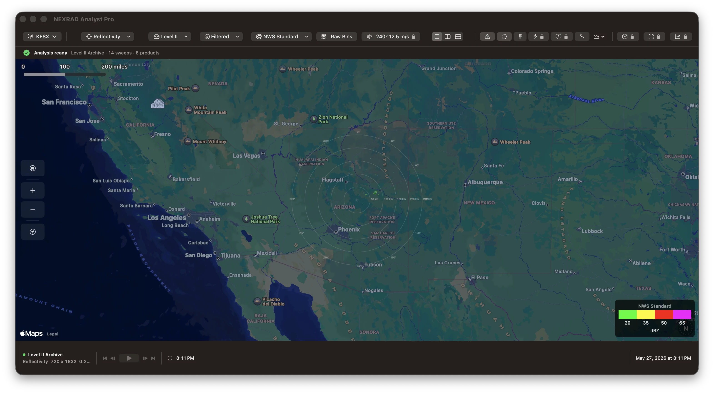
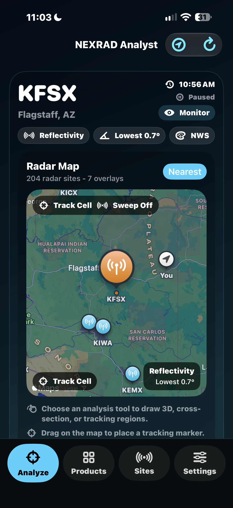
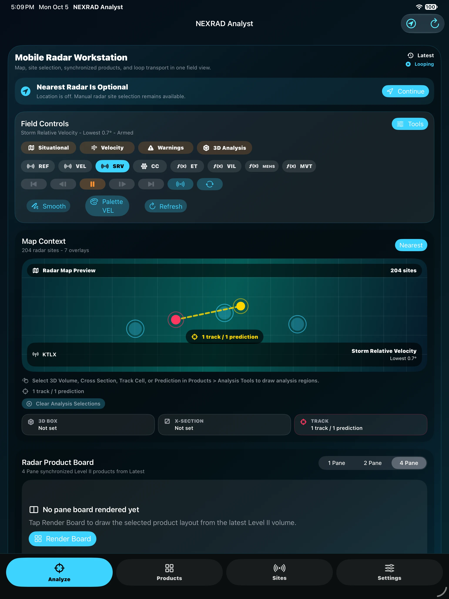
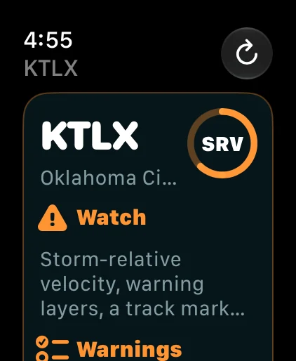

Storm Chasers
Compare velocity, SRM, reflectivity, warnings, lightning, and model context while keeping the storm structure in view.
RADAR. CONTEXT. CLARITY.
A native radar workspace for Mac, with iPhone, iPad, and Apple Watch companions. Explore NEXRAD Level II data, compare products, and keep weather context close.
Available for iPhone and iPad. Mac release currently in App Review.

FROM DESK TO FIELD
Choose a site, review radar products, and keep the map in view on iPhone and iPad. The Watch companion brings site and product context to your wrist.
Explore the iPhone and iPad app ↗Actual app screenshots. Displays show captured conditions, not current weather.



NEXRAD Analyst Pro is aimed at radar users who need more than a consumer weather map, with a Mac analysis workspace and companion views for iPhone, iPad, and Apple Watch.
Compare velocity, SRM, reflectivity, warnings, lightning, and model context while keeping the storm structure in view.
Inspect Level II products, derived fields, soundings, METARs, and warning polygons from one focused desktop workspace.
Track severe-weather context with readable overlays, timeline playback, alert tones, and fast keyboard-driven navigation.
Study radar volumes, export snapshots, import archive files, and use on-device analysis without a cloud account.
The app centers the radar display first, then layers in professional analysis tools when you need them.
Load NEXRAD Level II base data from 160+ WSR-88D radar sites using NOAA and AWS public data services.
Use 1-up, 2-up, and 4-up layouts to compare reflectivity, velocity, SRM, dual-pol products, and derived fields.
Explore storm volume structure with GPU-accelerated 3D rendering and MetalFX-supported performance modes.
Set storm motion and reveal rotation signatures that are harder to interpret in base velocity alone.
Overlay NWS warning polygons, METAR station plots, range rings, surface conditions, and hourly forecast context.
Use Core ML storm classification and local weather analysis with Apple Foundation Models where available.
Keyboard shortcuts cover site loading, products, overlays, layouts, playback, the inspector, and 3D view.
Import .ar2v archive files, export PNG radar snapshots, and index favorite radar sites through Spotlight.
SharePlay support keeps radar view state and cursor context aligned during FaceTime analysis sessions.
The basic radar viewer is included with the app. Pro unlocks the full radar analysis suite, while one-time packs add specialized severe-weather and machine-learning tools. Any Pro purchase also unlocks the add-on feature sets. See the app for current regional pricing, availability, and any trial eligibility.
Included
Included
Subscription
Monthly
Subscription
Annual
One-time
One-time
Available as standalone one-time purchases. Already included for Pro Monthly, Pro Annual, and Pro Lifetime customers.
Lightning overlays, NWP model overlays, severe-weather alert tones, and storm tracking aids.
Core ML storm cell classification and on-device weather situation analysis.
NEXRAD Analyst Pro is built with Swift, SwiftUI, MapKit, Metal, StoreKit 2, SwiftData, WeatherKit, Core ML, WidgetKit, WatchKit, and other Apple frameworks.
macOS 15 Sequoia or later, iOS 17 or later, and watchOS 10 or later
Macs with a Metal-capable GPU, plus supported iPhone and Apple Watch models
App Store, with purchases managed by Apple ID
Internet connection required for current radar and weather data retrieval